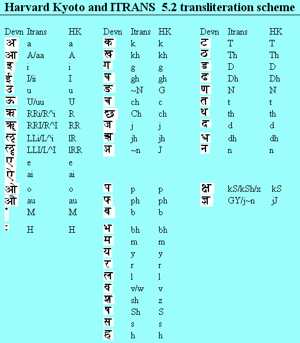

Słowniczek terminów indyjskich (głównie sanskryckich)
Poniższą listę opracowałem w oparciu o słownik przygotowany przez wilbicieli Baby i zamieszczony na oficjalnej stronie Organizacji Sathya Sai. Najistotniejsza wprowadzona przeze mnie zmiana to dodanie w nawiasach kwadratowych transliteracji przy każdym sanskryckim wyrazie według konwencji Itrans (zob. też niżej załączony obrazek). Zapis Itrans oparłem prawie całkowicie o słownik Monier-Williamsa w postaci cyfrowej.
To uzupełnienie uwiarogodnia przyjętą uproszczoną transkrypcję, a także pozwala na prostą zmianę polskiej pisowni. W polskiej transkrypcji starałem się o jednolitość polecanego wariantu miękkiego (dź, ć, ś, ri oraz n, aj). Czytelnik może w dopuszczalnych granicach łatwo zmienić tę pisownię, według własnego gustu lub zgodnie z preferencjami praktykowanymi w polskiej literaturze, posługując się formą transliterowaną: ch odpowiada ć lub cz; j — dź lub dż; M — n lub m; R — ri lub ry; ai — aj lub ai; sh — ś lub sz (w sprawie polskiej pisowni sanskrytu zob. także ten artykuł). Naturalnie, podczas modyfikacji oryginalnej wersji słowniczka usunąłem kilka dostrzeżonych błędów oraz dokonałem paru uzupełnień i innych zmian. Tę moją wersję trzeba jednak traktować jako roboczą. Będę wdzięczny za informacje o zauważonych błędach, a także za wszelkie inne uwagi, które można kierować na adres kb@astro.uni.torun.pl
daja [dayA] — litość, współczucie.
dajwa [daiva] — boskie; los, fatum.
dajwanśasambhuta [daiva-aMsha+sambhuta] — urodzony (sambhuta) jako cząstka (anśa) boskości (dajwa).
dakszina [dakShiNa] — opłata, południe (strona świata).
dakszinajana [dakShiNAyana] — półrocze, gdy słońce zmierza ku południowi (lipiec – grudzień).
Dakszinamurti [dakShiNAmUrti] — imię ('Forma Południowa') Pana Śiwy jako milczącego nauczyciela. Przedstawia się go siedzącego pod banjanem i w ciszy uczącego czterech riszich u swoich stóp.
dal(a) [DAla] — gałąź, sewa dal - gałąź służebna.
dama [dama] — samokontrola, cierpliwość, wyrzeczenie.
dana(m) [dAna] — dobroczynność.
danawa [dAnava] — demon, asura, wróg dew.
danda [daNDa] — laska, kij; buława.
Dandaka(ranja) [daNDaka, daNDakAraNya] — nazwa lasu (aranja).
daridra [daridra] — biedak.
darpana [darpaNa] — zwierciadło.
darśan(am) [darshana] — akt udzielenia widzenia wielbicielowi; widzenie, widok świętej osoby.
darśana [darshana] — jeden z sześciu podstawowych systemów filozofii dawnych Indii; wgląd.
dasja(m) [dAsya] — ósmy etap duchowej sadhany; służenie, postawa sewy.
daśa [dasha] — dziesięć.
daśańgula [dashA~ngula] — 10 palców (cali?) długości lub w obwodzie.
Daśara [dasharA] — dziesiąty dzień Daśaratry, świętowanie zwycięstwa Ramy nad Rawaną, stąd zwany też Widźajadaśami.
Daśaratha [dasharatha] — ojciec Ramy, władca Ajodhji.
Daśaratra [dasharAtra] — dziesięć dni (nocy); 10-dniowe święto od nowiu w miesiącu Aświna (wrzesień/październik); główna część 12-dniowych obrządków Dwadaśaha; zob. też: Daśara i Nawaratra.
daśawatar [dashAvatAra] — jeden z dziesięciu kolejnych awatarów; ostatnich trzech to: Rama, Kriszna i Kalki.
daśendrije [dashendriya] — dziesięć zmysłów.
Dattatreja [dattatreya] — mędrzec, syn Atriego i Anasuji.
deha [deha] — ciało materialne, śmiertelne.
dehi(n) [dehin] — mieszkający w ciele człowieka Bóg; ucieleśniony; żywa istota.
dewa [deva] — boski, niebiański; bóg, bóstwo.
Dewaki [devakI] — córka prawdziwej matki Śri Kriszny, którą była Dewaka.
dewi [devI] — bogini.
dewudu [telugu: devuDu] — bóg.
dhana [dhana] — nagroda, skarb, kapitał.
Dhanwantari [dhanvantari] — bóg medycyny i zdrowia, nauczyciel ajurwedy.
dhara [dhara(-A); dhAra(-A)] — posiadający, wspierający, niosący; stumień, zalew, wytrysk, głębia.
dharma [dharma] — droga prawości, właściwe postępowanie, przykazanie boże, obowiązek, kodeks etyczny, natura.
dhjana(m) [dhyAna] — medytacja, koncentracja, kontemplacja.
dhobi [hindi: dhobI, dhobi] — pracz/praczka.
dhoti [hindi: dhotI, dhoti] — rodzaj długiego męskiego okrycia noszonego na biodrach.
Dhritarasztra [dhRtarAShTra] — ślepy król, ojciec setki Kaurawów.
diwja(twa) [divya(tva)] — boskie, niebiańskie, cudowne (boskość).
Draupadi [draupadI] — żona braci Pandawów.
driszti [dRShTi] — wzrok, widzenie.
driśja [dRshya] — widzialny, widziany, oglądany.
Dronaćarja [droNAchArya] — Drona jako nauczyciel Kaurawów i Pandawów.
duhkha [duHkha] — smutek, przykrość, ból.
Duhśasana [duHshAsana] — syn Dhritarasztry.
dunna [telugu: dunna] — bawół.
Durwasa [durvAsas] — mędrzec znany ze swej porywczości, syn Atriego i Anasuji.
Duszana [dUShaNa] — imię rakszaskiego dowódcy.
dwajta [dvaita,-A] — dualizm, doktryna, według której jednostka i Bóg są oddzielne.
dwapara juga [dvApara yuga] — era w dziejach świata poprzedzająca współczesną kali jugę; w bieżącym cyklu ćaturjug skończyła się wraz ze śmiercią awatara tej jugi, Kriszny (ok. 5000 lat temu).
dwa(u), dwe, dwe [dva(u), dve, dve] — dwa (rodz. m., ż., n.).
dwesza [dveSha] — nienawiść, gniew, awersja.
Dźabali [jAbAli] — mędrzec; kapłan Daśarathy.
dźada [jaDa] — bezwładna materia, stworzenie, wszystko, co nie jest sat ani ćit.
dźagadguru [jagadguru] — nauczyciel świata, uniwersalny mistrz.
Dźagadiśa, Dźagadiswara [jagadIsha, jagadIsvara] — Pan Świata.
dźagat [jagat] — zmienny świat przejawiony, nieprawdziwy.
dźagrat [jAgrat] — przebudzony; stan jawy.
dźaja [jaya] - zwycięstwo, wygrana, pokonanie.
dźala [jAla] — woda, żywioł wody (dźalatattwa).
Dźamadagni [jamadagni] — ojciec Paraśuramy, potomek Bhrigu.
Dźambhawan [jAmbavat] — imię przywódcy małp.
Dźanaka [janaka] — król-mędrzec, ojciec Sity, małżonki Ramy.
Dźanmasztami [janmAShTamI] — urodziny (dźanma) Pana Kriszny przypadające na 8-my (asztami) dzień po pełni w miesiącu Śrawana lub Bhadra (lipiec/wrzesień).
dźapa(m) [japa, jApa] — powtarzanie albo śpiewanie wybranego imienia Pana lub mantry z poddaniem ego i z głębokim oddaniem oraz koncentracją.
dźapamala [japamAlA] — korale modlitewne składające się ze 108 paciorków.
Dźataju [jaTAyus] — król orłów lub sępów.
dźej — okrzyk radości lub zwycięstwa (od: dźa [ja], dźaja — zwycięski, zwycięstwo).
dźhula [hindi: jhUlA] — wisząca kołyska, hamak, kołyska; kołysać; kołysanka (pieśń).
dźidźńasu [jij~nAsu] — pragnący wiedzieć, dociekający, sprawdzający.
dźiwa(-i) [jIva (jIvin)] — jednostka (istota żywa), niezrealizowana indywidualna dusza; osoba, człowiek, świadomość ,,ja".
dźiwanmukta [jIvanmukta] — człowiek, który osiągnął wyzwolenie (mukti) za życia.
dźiwatma [jIvAtman] — jaźń, dusza, człowiek.
dźjoti [jyoti(s)] — światło, jasność (słońce, świt).
dźńana(m) [j~nAna] — poznanie, mądrość; wyższa, święta wiedza.
dźńanendrije [j~nAnendriya] — pięć narządów (indrija) poznania (zmysłów wewnętrznych): wzrok, słuch, smak, węch, dotyk
dźńani(n) [j~nAnin] — ten, który posiadł dźńanę, osoba wyzwolona.
dźńeja [j~neya] — to, co jest poznawane, przedmiot wiedzy.
eka(m) [eka(m)] — jeden/jedna (jedno/jednostka), pojedynczy, wyjątkowy.
ekadaśi [ekAdashI] — jedenasta; jedenasty dzień połowy księżycowego miesiąca, uważany za najodpowiedniejszy na post.
ekagrata [ekAgratA] — skupienie na jednym (eka), koncentracja, jednolitość.
ewa(m) [eva(m)] — tak, prawdziwie, tylko; szybki; droga.
gaććha(ti) [gam, gacch, gaccha(ti), gAcchAti] — iść, odchodzić, wyruszać, przychodzić.
gadźa, gadźendra [gaja, gajendra = gaja-rAja] — słoń, król słoni.
Gajatri [gAyatrI] — jedna z najważniejszych mantr, strofa z Rigwedy, recytowana o świcie, w południe i o zmierzchu.
gajatri [gAyatrI] — najważniejsza miara metryczna w poezji składająca się z 24 sylab.
gana [gaNa] — trzoda, grupa, zastępy (szczególnie służby Śiwy pod nadzorem Ganeśy).
Ganapati [gaNapati] — Pan ganów, Ganeśa.
gandha [gandha] — zapach, odór, powonienie; pycha, arogancja; związek.
gandharwa [gandharva] — półbóg, niebiański muzyk.
Gandiwa(m) [gANDiva(m), -Iva] — nazwa łuku Ardźuny; łuk.
Ganeśa [gaNesha] — słoniogłowy starszy syn Śiwy; jedno z najpopularniejszych bóstw indyjskich, bóg mądrości i przeszkód (stawia je, ale też usuwa).
Ganeśa Ćaturthi [gaNeshachaturthI] — urodziny Ganeśy przypadające na czwarty (ćaturthi) dzień po nowiu w miesiącu Bhadra (sierpień/wrzesień).
Ganga [ga~NgA] — rz. Ganges.
garu [hindi: garu] — ciężki, wybitny; nieżyjący, ś.p. (po nazwisku).
Garuda [garuDa] — niebiański orzeł, wierzchowiec Wisznu.
Gautama [gotama, gautama] — imię riszich.
ghi [hindi: ghi, ang.: ghee] — klarowane masło.
Gita; gita [gItA] — Bhagawad Gita; pieśń, wiersz.
go [go] — krowa, byk.
Godawari [godAvarI] — nazwa rzeki.
gopala [gopAla] — pasterz krów; przydomek Kriszny.
gopi(ka) [gopI, gopa, gopikA, gopaka] — pasterka lub żona pasterza.
gopura [gopura] — ozdobne wejście do świątyni; brama.
gotra [gotra] — ród, linia rodowa, pokolenie.
Gowinda [govinda] — imię Kriszny.
grama(m) [grAma] — wioska; zbiorowość ludzi; starsza kobieta w rodzinie.
griha [gRha] — służący; dom; domownicy; żona; głowa rodziny.
grihalakszmi [gRha lakShmI] — bogini domu.
grihastha, grahastha(-jam) [gRhastha, grahastha] — drugi etap w wedyjskim życiu człowieka, uduchowione świeckie życie głowy rodziny.
Guha [guha; guhA] — imię przywódcy Niszadów; grota, ukrycie.
guna [guNa] — cechy charakterystyczne, składnik rzeczywistości, typ zachowań; są trzy podstawowe cechy: sattwa, radźas i tamas.
gunatita [guNAtIta] — wolny od gun, ponad cechami.
guru [guru] — czcigodny; duchowy nauczyciel, przewodnik na drodze do wyzwolenia.
Gurupurnima [gurupUrNimA] — święto ku czci nauczyciela (guru) pokoleń Wjasy, dzień (noc) pełni księżyca (purnima) w miesiącu Aszad (czerwiec/lipiec).
hansa [haMsa] — łabędź; mityczny wierzchowiec Brahmy.
Hanuman [hanuman(ta), hanumat] — syn boga wiatrów Waju, jeden z bohaterów Ramajany, oddany wielbiciel Ramy.
Hari [hari] — imię różnych bogów, szczególnie Wisznu.
harina [hariNa] — jeleń.
Hariśćandra [harishchandra] — imię różnych autorów i króla z tretajugi.
hasta [hasta] — ręka.
Hastinapura [hastinApura] — stolica królów linii lunarnej (księżycowej, tj. 'po kądzieli'), główna scena akcji Mahabharaty.
hatha [haTha; hatha] — przemoc, siła, hathajoga czyli system ćwiczeń ukierunkowany na zapanowanie nad ciałem lub umysłem; uderzenie, zabicie, zgładzenie (też: hatyA).
he [he] — partykuła wykrzyknika, 'o!'
hinsa [hiMsA] — przemoc, krzywdzenie.
hiranja [hiraNya] — złoto.
Hiranjagarbha [hiraNyagarbha] — 'Złoty płód', zalążek życia i formy; złote jajo, z którego narodził się Brahma jako Stwórca; Promienny (imię boga słońca).
Hiranjaksza i Hiranjakaśipu [hiraNyAkSha, hiraNyakashipu] — demony-bracia ('złotooki' i 'odziany w złoto'), zgładzeni przez awatarów Wisznu: Warahę i Narasinhę.
hri [hR] — nosić, zawierać.
hridaja [hRdaya] — serce.
homa [homa] — ofiara dla bogów obejmująca wlewanie do ognia klarowanego masła.
hotra; -i [hotra; hotR] — ofiara, ofiarowanie przez spalenie; składający ofiarę.
jadźńa [yaj~na] — bardzo rozbudowana rytualna ofiara (w odróżnieniu od pudźy) bez obiektu czci.
Jadźńawalkja [yAj~navalkya] — jedna z największych osobistości upaniszad, kapłan i guru króla Dźanaki.
Jadźurweda [yajurveda] — Weda ofiar.
jaga [yAga] — obrządek z darami ofiarnymi.
Jama [yama] — bóg śmierci, syn Surji i brat prawodawcy Manu.
jama [yama] — panowanie nad wewnętrznymi zmysłami; zasada moralna.
jantra [yantra] — technika; symbol lub diagram pomocny przy medytacji; narzędzie, maszyna.
Jaśoda [yashodA] — macocha Kriszny, która wychowywała Go od urodzenia.
joga [yoga] — związek, unia; dyscyplina duchowa.
Judhiszthira [yudhiShThira] — Dharmaradźa, najstarszy z braci Pandawów.
juga [yuga] — wiek, epoka w dziejach świata.
jugadi [yugAdi] — początek (adi) jugi; zob. Ugadi.
jugawatar [yugAvatAra] — awatar określonej jugi, ery; Sai Baba jest awatarem toczącej się obecnie kalijugi.
juwaradźa [yuvarAja] — koronowany książę, następca tronu.
Kabandha [kabandha] — demon z otworem gębowym na brzuchu.
Kajkeji [kaikeyI] — trzecia żona Daśarathy, matka Bharaty.
Kajlas(a) [kailAsa] — święta góra w Himalajach uważana za siedzibę bogów, szczególnie Śiwy.
kajwalja [kaivalya] — absolutna jedność, duchowa wolność i niezależność.
kaka [kAka; telugu: kAki] — wrona, krakanie.
kala [kala; kAla; kalA] — niewyraźny, surowy; śmierć, czarny, noc, żelazo; część, 1/16-ta część, jednostka czasu.
kalijuga [kaliyuga] — obecna epoka dziejowa, wiek kali, wiek żelaza, ciemności i zła, charakteryzujący się złymi, bezbożnymi czynami.
Kalinga [kAli~Nga] — imię węża z czasów Kriszny.
kaljana [kalyANa] — honorujący, pomyślny, dobroczynny.
Kalki(n) [kalki] — dziesiąty z daśawatarów pojawiający się na końcu każdej ćaturjugi, na białym koniu z dobytym mieczem, który wyplenia niegodziwców; w obecnej epoce jest Nim Sathya Sai Baba.
kalpa [kAlpa; kalpa] — rytuały, ceremonie; okres w dziejach, dzień i noc Brahmy, drzewo w niebie.
kalpataru, kalpawriksza [kalpataru, kalpavRkSha] — niebiańskie drzewo (wriksza, taru) spełniające życzenia.
kama(m) [kAma] — żądza, pożądanie, chciwość, pragnienie przedmiotów zmysłowego świata, zmysłowość; miłość (doczesna), przyjemność; przedmiot pragnienia, przyjemności, miłości.
Kamada Dewi [kAmada devI] — bogini spełniająca pragnienia.
Kamadhenu [kAmadhenu] — krowa (dhenu) Wasiszthy spełniająca wszystkie życzenia.
kanda [kaMda] — rozdział (książki), węzeł, woda, chmura.
Kansa [kaMsa] — król Mathury, niegodziwy kuzyn Pana Kriszny.
kantha [kaNTha; telugu: katha] — gardło, szyja, szyjka (naczynia).
Kapila [kapila] — starożytny mędrzec-filozof, propagator dwajty, rozdzielności ducha i materii; uważany za niepełnego awatara.
kara [kAra] — czynienie, robienie; czyniący; czyn, akt.
karana [kAraNa; karaNa] — przyczyna; narząd, instrument.
karma [karma(n)] — czyn, obowiązek działania; przeznaczenie, los jako skutek czynów w poprzednich inkarnacjach.
karmamarga [karmamArga] — ścieżka wyrzeczenia się owoców czynów.
karmendrije [karmendriya] — pięć narządów (indrija) działania (zmysły zewnętrzne): oko, ucho, język, nos, ręce (krtań, ręce, nogi, odbyt i narządy płciowe).
Karna [karNa] — syn (nieślubny) Kunti, matki pięciu Pandawów.
Kartawirja [kArtavIrya] — Ardźuna, syn Kritawirji zabity przez Paraśuramę.
Karttikeja [kArttikeya] — imię Skandy.
karuna [karuNA] — współczucie, litość.
kaszta [kaSTa] — znój, wysiłek; wyczerpujące, trudne.
Kaśi [kAshi, kAshI] — słynne miejsce pielgrzymek, współczesny Benares.
Kaśjapa [kashyapa] — jeden z siedmiu wielkich mędrców (riszich), autor kilku hymnów wedyjskich; miał liczne potomstwo: ludzi, nagów (węży), gadów, demonów, ptaków i prawie wszystkich gatunków żywych stworzeń; jako ojciec życia nazywany Pradźapatim — stwórcą; arcykapłan Ramy.
katha [kathA] — opowiadanie.
Kaurawowie [kaurava] — potomkowie Kuru, stu synów króla Dhritarasztry, w czasie wojny Mahabharaty występujący przeciwko swym kuzynom Pandawom.
Kauśalja, Kausalja [kaushalyA, kausalya] — matka Śri Ramaćandry.
kawi [kavi] — wieszcz, poeta.
Keśawa [keshava] — imię Kriszny jako pogromcy demona Keśi; imię Wisznu.
Khara [khara] — brat Rawany.
kinnara [kiMnara] — mityczna postać o ciele człowieka i głowie konia lub odwrotnie.
kirtan(a) [kIrtana] — śpiewanie lub recytacja imienia Boga.
Kiszkindha [kiShkindha] — nazwa góry i łańcucha górskiego.
Kodanda [kodaNDa] — łuk Ramy, łuk.
ko'ham [ka+aham] — kim jestem?
koel [?] — jedna z kukułek indyjskich (wymowa: koul).
kokila [kokila] — kukułka czarna lub indyjska (często przywoływana w poezji).
kośa (kosza) [kosha (koSha)] — powłoka; jest pięć powłok skrywających atmę: annamaja-, pranamaja-, manomaja-, widźńanamaja- i anandamaja-kośa.
Kośala [koshala, kosala] — kraj.
koti [koTi] — najwyższy punkt, doskonałość; 10 milionów (dawniej była to największa liczba).
kripasagara [kRpAsAgara] — ocean (sagara) miłosierdzia, litości (kripa).
Kriszna [kRShNa] — awatar wieku dwapara, ósmy syn Dewaki i Wasudewy wychowany przez Jaśodę.
kriszna(paksza) [kRShNa (pakSha)] — ciemny, zły (połowa miesiąca księżycowego po pełni).
krita [kRta] — nazwa pierwszego wieku w dziejach świata, satja-jugi.
krodha(m) [krodha] — gniew, nienawiść, awersja.
kror [hindi: karor, kror, ang.: crore] — jednostka liczebności równa 10 milionów czyli 100 lakhów (por. koti).
kszaja [kShaya] — strata, destrukcja.
kszama [kShama] — zdolność wybaczania.
kszatrija [kShatriya] — stan społeczny dawnych Indii skupiający elitę polityczną i militarną.
kszema [kShema] — dobrobyt, szczęście.
kszetra [kShetra] — pole; ciało, w którym dźiwa zbiera owoce swojej karmy.
kszetradźńa [kShetraj~na] — znawca pola; ten, kto zna wszystko, co dzieje się na polu życia.
ku [su] — niepełne, niedostateczne, wypaczone.
kubdźa [kubja] — garbaty; wygięty miecz.
Kubera [kubera, kuvera] — bóg bogactw, namiestnik północy.
kućela [kuchela] — obszarpaniec; złe ubranie.
kumara [kumAra] — syn, chłopiec.
kumbha [kumbha] — dzban, naczynie na wodę.
Kumbhakarna [kumbhakarNa] — 'Dzbanouchy', demon-śpioch, brat Rawany.
kunda [kuNDa] — misa, dzban lub inne naczynie na wodę; okrągły dołek na wodę lub palenisko.
kuńdźara [ku~njara; ku~njarA] — słoń; słonica (też: ku~njarI).
kupa [kUpa] — źródło, studnia, dół.
Kurma [kUrma] — druga inkarnacja Wisznu w postaci Żółwia (który podtrzymywał górę Mandara w czasie mitycznego ubijania oceanu); żółw.
Kurukszetra [kurukShetra] — rozległa równina niedaleko Delhi, miejsce bitew między Kaurawami i Pandawami.
kuśa [kusha] — święta trawa o długich ostrych źdźbłach.
Kuśadhwadźa [kushadhvaja] — imię księcia.
OM, AUM [om] — sylaba będąca najważniejszą mantrą; pierwotny dźwięk znany też jako pranawa, akszara i omkara.
omkar(a) [omkAra] — wymawianie, recytacja OM.
wać [vach] — mówić (zob. też wak).
wada [vaDA, vaTa] — mały kawałek, kulka, ciastko; południowoindyjski przysmak.
wadźra [vajra] — słynna broń Indry (grom).
wahini [vAhinI] — strumień, nurt, rzeka, kanał.
Wajkuntha [vaikuNTha] — niebo Wisznu.
wajrag(j)a [vairAg(y)a] — nieprzywiązanie, wolność od pragnień (beznamiętność, wyrzeczenie).
wajśja [vaishya] — w dawnych Indiach społeczna klasa (warna) obejmująca producentów (rolników, rzemieślników, kupców); chłop.
Wajśwanara [vaishvAnara] — bóg ognia, Agni, ogień trawienny.
Waju [vAyu] — bóg wiatru; wiatr, powietrze.
wak, wać [vAk, vAch] — mowa, język.
Wali [vAlin] — niegodziwy przywódca wanar.
Walmiki [vAlmIki] — jeden z największych poetów Indii, twórca Ramajany.
Wamadewa [vAmadeva] — imię starożytnego riszi.
Wamana [vAmana] — Karzeł, w tradycji piąty awatar Wisznu, który przyszedł, by poskromić pychę króla Bali.
wanaprastha [vAnaprastha] — trzeci, pustelniczy, okres w życiu człowieka: odsunięcie się od pokus życia na korzyść wyrzeczenia i medytacji.
wanara [vAnara] — 'leśne zwierzę', małpa.
wandana(m) [vandana, -A] — sławienie, oddawanie czci, wielbienie.
wani [vANI] — głos, mowa, słowa.
Waraha [varAha] — Dzik, w tradycji trzeci awatar Wisznu (zgładził demona Hiranjakszę); odyniec, świnia.
warna [varNa] — klasa społeczna, stan, często nazywana niesłusznie kastą: bramin (brahmana), kszatrija, wajśja i śudra.
Waruna [varuNa] — bóg wód i oceanów; jeden z opiekunów świata.
wasana [vAsanA] — wrażenia; pragnienie, skłonność, impuls, instynkt, przywiązanie (zwłaszcza przenoszone z poprzednich inkarnacji); tradycja.
Wasisztha, Waśisztha [vasiShTha, vashiShTha] — słynny święty (bramin), wielki mędrzec z czasów awatara Ramy.
Wasudewa [vasudeva; vAsudeva] — imię ojca Kriszny; imię Kriszny jako syna Wasudewy.
wedanta [vedAnta] — nauka o prawdziwej naturze rzeczywistości; traktat filozoficzny będący zakończeniem (anta) Wed.
Wedy, weda [veda] — dosł. wiedza; najstarsze teksty indyjskie, uważane za przesłanie objawione mędrcom przez Boga.
Są to poetyckie hymny, mantry i inne teksty recytowane lub śpiewane przez braminów. Dzielą się na cztery części: Rigweda — weda wierszy, Samaweda — weda pieśni, Jadźurweda — weda tekstów ofiarnych, Atharwaweda — weda Atharwana, mistycznego kapłana ognia.
wibhag [vibhAga] — oddział, skrzydło, część, porcja.
Wenkata(giri) [ve~NkaTa(giri)] — nazwa świętej góry niedaleko od Madrasu ze świątynią Kriszny na szczycie.
Wenkateśwara [ve~NkaTeshvara)] — Pan góry Wenkata czyli Kriszna.
Wibhiszana [vibhIShaNa] — brat Rawany, który poddał się Ramie.
wibhuti [vibhUti] — popiół; nadludzka moc; obfitość.
wićara(na) [vichAra(Na)] — wnikliwa analiza, dociekanie, rozróżnianie, samoocena.
wideha [videha] — bezcielesne, subtelne.
widja [vidyA] — nauka, wiedza, dźńana.
Widjudźdźihwa [vidyujjihva = vidyut + jihva] — imię rakszasy.
Widźaja [vijaya] — bogini zwycięstwa, zwycięstwo.
widźńana [vij~nAna] — wiedza, mądrość, wiedza intuicyjna.
widźńanamaja-kośa [vij~nAnamaya kosha] — czwarta powłoka okrywająca atmę, powłoka intelektu; zob. kośa.
Wigna [vighna] — imię Ganeśy; niszczyciel; przeszkoda.
Wigneśwara [vighneshvara] — aspekt Ganeśy — usuwający przeszkody.
wihara [vihAra] — akt, czyn.
wikalpa [vikalpa] — wybór, alternatywa; niezdecydowanie.
wikarma [vikarman] — złe czyny.
wikas [vikas] — rozkwitać, otwierać się, rozdzielać, jaśnieć.
wikriti [vikRti] — zmiana, modyfikacja, odmiana.
wimana [vimAna] — pojazd.
wimoćana(m) [vimochana] — uwolnienie, wyzwolenie.
winaja [vinaya] — zabieranie, usuwanie; prowadzenie, przewodzenie.
Winajaka [vinAyaka] — imię Ganeśy ('usuwający przeszkody').
wipra [vipra] — mędrzec, uczony, bramin, kapłan.
wira, wirjam [vira, vIrya] — męstwo.
Wiradha [virAdha] — imię rakszaskiego demona.
wiraga [virAga] — obojętność, bez uczucia, wajraga.
Wiroćana [virochana] — bóg słońca, słońce; księżyc; ogień.
Wisznu [viShNu] — drugi bóg hinduskiej triady Brahma-Wisznu-Śiwa, czczony jako obrońca; nosi wiele imion, m.in. Wasudewa, Narajana, Hari.
wiśiszta [vishiShTa] — inny, szczególny, wyróżniający się, wybitny.
wiśisztadwajta [vishiShTAdvaita] — niedualizm warunkowy (z zastrzeżeniem), ważna szkoła filozoficzna wedanty.
wiśwa(m) [vishva] — wszechświat.
Wiśwakarman [vishvakarman] — architekt bogów.
Wiśwamitra [vishvAmitra] — współczesny Wasiszcie mędrzec królewskiego stanu; twórca mantry Gajatri.
wiśwasa [vishvAsa] — wiara, zaufanie, poufność.
wiweka [viveka] — zdolność rozróżniania, wnikliwość; zdrowy rozsądek.
Wiwekananda (1863–1902) — mistyk hinduski, wyprowadził hinduizm na Zachód.
wjakti [vykti] — przejawiający się; (szczególny) wygląd, jednostka, osobowość.
wjamoha [vyAmoha] — ułuda.
Wjasa [vyAsa] — „kompilator"; kompozytor Wed i autor Mahabharaty.
wjaszti [vyaShTi] — jednostka, indywidualność, część zbiorowości, przeciwieństwo samaszti.
wrata [vrata] — reguła dyscypliny duchowej, ślubowanie, postanowienie (np. mauna-wrata — ślub milczenia).
writti [vRtti] — aktywność, pobudzenie umysłu.
Translitaracja znaków dewanagari na alfabet łaciński przyjęta w MWSDD (nazwa programu obsługi cyfrowej wersji słownika M-W). Poniższy rysunek przechwyciłem wprost z opcji 'Help' tego programu.

Translitaracja znaków dewanagari na alfabet łaciński